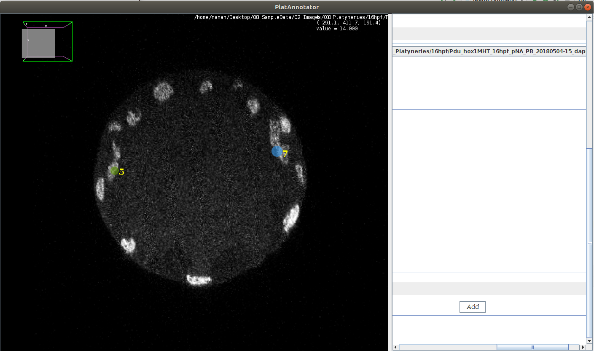

Welcome to PlatyAnnotator’s documentation!¶
PlatyAnnotator is an ImageJ plugin aimed at annotating landmark nuclei in images of in-situ Platyneries dumerilii embryos. These landmark nuclei change very less with time, thus making them of interest as invariant keypoints. A desired product from using this tool is obtaining training data which would allow one to train a convolutional neural network. Such a network would accept volumetric images of embryos as input and predict the locations of these keypoints. This, in turn, would allow the user to render all volumetric images in the same pose.
Preparing annotation data through this pipeline broadly requires two steps
Saving transformation matrix file prepared through 3D Viewer
Loading transformation matrix file from above in PlatyAnnotator and annotating nuclei
These steps are described in more detail below.
3D Viewer¶
Start Fiji
Open the volumetric image of interest
Search for 3D Viewer
Rotate the embryo using the mouse, until the point when the anterior-posterior axis is aligned parallel to the vertical axis of the viewer’s screen
Also ensure that dorsal-ventral axis points perpendicular to the viewer’s screen, and towards the viewer
Select Edit > Transform > Save Transform, and save the obtained transformation matrix at a preferred location
Installation¶
Open Fiji
Select Help > Update
Add the following update site link under Manage Update Sites
Restart Fiji
Search for PlatAnnotator
Open Image¶
Select card Open File
Browse for Image on your local workstation
Open the selected file
{kind=link}
Transform Image¶
Select card Transform Image
Load the transformation matrix prepared in 3D Viewer by selecting Browse
Ensure that Reflect checkbox is ticked
Click on Generate
Click on Run
If the transformed image is not visible in the viewer panel, play with \(A_{03}, A_{13} \text{and} A_{23}\). For example, add 200 to these cells and click on Run again
If the transformed image is visible, then go to Selection card
Hide the original image and other non-functional versions
Save Affine Transform at any preferred location by selecting Browse
{kind=link}
Annotate Nuclei¶
Press SHIFT+Y in viewer’s screen
Click on Select
Drag and make an oval on the nucleus of interest
Click on * Add*
Continue to annotate until 10-12 such nuclei locations are obtained
Save Results
Important Here it is essential to note that the nuclei should be labeled in the same sequence. So Nuclei 3 in Embryo 1 should correspond to the same structure of interest in Embryo 2, for example
{kind=link}